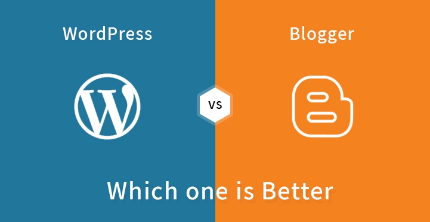
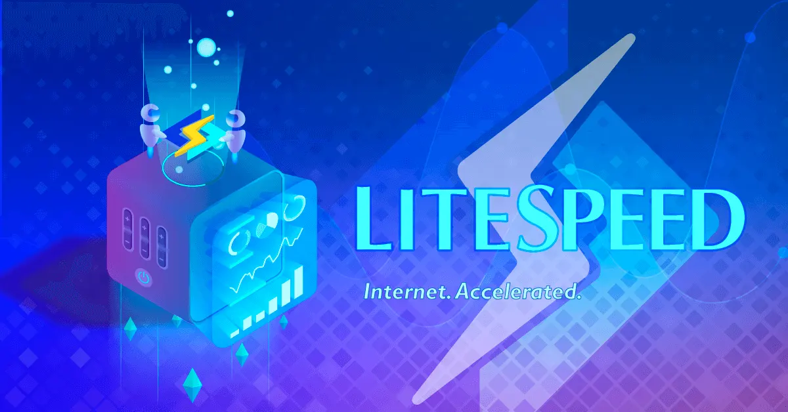

About Me
Hola, My name is Galang Wijaya.
Someone who is still learning with high motivation in web development, automation, and
system administration.
proficient in PHP, JavaScript, HTML, and CSS, with the ability to create dynamic and visually
appealing web
applications.
My Article
Wordpress Vs Blogspot/Blogger Mana yang Harus Dipilih ?

Pada tahun 2020, jumlah blogger di Amerika Serikat diperkirakan akan menempuh 31,7 juta. Sebab jumlah
ini terus meningkat, Anda mungkin bertanya-tanya ...
Read More
LiteSpeed WebServer Keunggulan Dan Kekuranganya

Litespeed Server adalah salah satu situs server paling populer. Sisi server itu sendiri merupakan hal
penting untuk dipertimbangkan di World Wide Web ...
Read
More